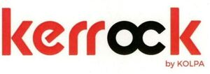

Trade Mark Journal No.2026/003 16 January 2026
WO0000001883671 (1,11,20,35)
Office of origin: Slovenia
Date of International Registration:30 April 2025
Date of designation in the UK:
30 April 2025

The mark contains the colours red and black.
The letters K, E, R, R, K and the words BY KOLPA are in red, and the letters O and C are in black.
- Class 1
- Chemical products for industry, science, photography, as well as for agriculture, horticulture and forestry; artificial resins in crude state; chemical substances in crude state; chemical products for food preservation; adhesives for industry.
- Class 11
- Plastic baths and washbasins, shower trays and shower cubicles.
- Class 20
- Furniture, bathroom furniture; mirrors, picture frames.
- Class 35
- Advertising; publishing of advertising texts; advertising via the Internet; writing of advertising texts; business research and data collection from the media; advertising services; direct mail advertising; wholesale and retail trade services, including online via computer networks (e-commerce services) of the following goods: chemical products for industry, science, photography, as well as for agriculture, horticulture and forestry, artificial resins in crude state, artificial substances in crude state, chemical products for preserving foodstuffs, adhesives for industry, plastic baths and washbasins, shower trays and shower cubicles, furniture, bathroom furniture, mirrors, frames; business organization consultancy; sales intermediation; market research and public opinion polling; organization of fairs and exhibitions for advertising and commercial purposes; advertising and marketing services via blogs.
KOLPA d.o.o.
Representative: HGF Limited, 4th Floor, 1 City Square Leeds LS1 2AL UNITED KINGDOM